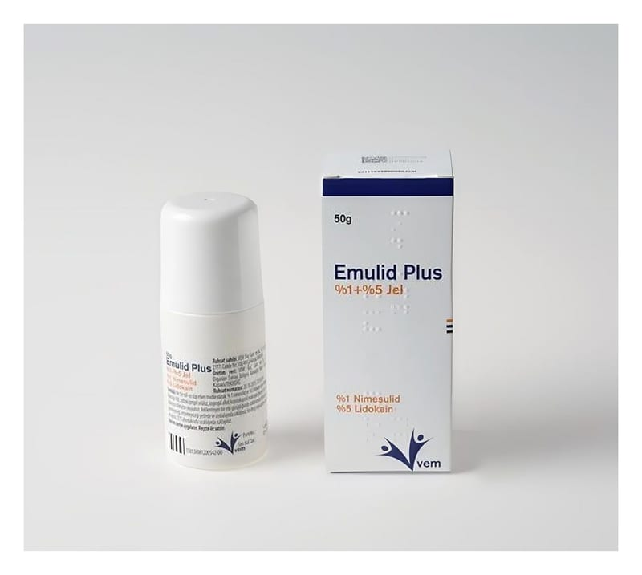

Emulid Plus % 1 + % 5 Jel

Ne için kullanılır
KT · Bölüm 1 EMULĠD PLUS, etkin madde olarak nimesulid ve lidokain içermekte olup, topikal (deriye sürülmek suretiyle uygulanan) kullanılan nonsteroidal antienflamatuvar ilaçlar olarak adlandırılan ilaç grubuna dahildir. Jel formunda bir ürün olan EMULĠD
PLUS her bir roll-on tüpte %1 nimesulid ve %5 lidokain içerir. EMULĠD PLUS, 50 gram jel içeren polietilen roll-on tüpler (ucunda dönen top olan tüp) içinde kullanıma sunulmaktadır.
EMULĠD PLUS, aĢağıdaki hastalıkların tedavisinde etkilidir; Bel ağrısı (lumbago), eklem kireçlenmesi (osteoartrit), eklemi çevreleyen yumuĢak dokunun iltihabı (periartrit), kas kiriĢ iltihabı (tendinit), kas, kiriĢ kılıfının iltihabı (tenosinovit), eklem çevresindeki keselerin iltihabı (bursit) ve spor yaralanmaları gibi burkulma ve ezilmenin eĢlik ettiği yumuĢak doku ve eklemlerin travmatik, dejeneratif ve romatizmal hastalıkları